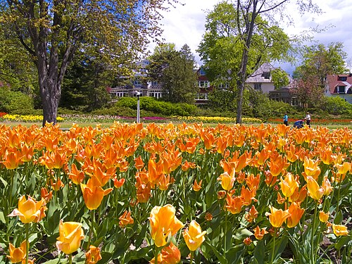
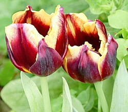
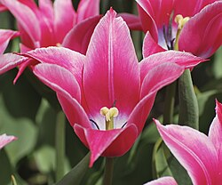
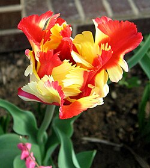
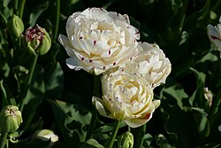

Tulipán
Los tulipanes son geófitas herbáceas bulbosas perennes de floración primaveral del género Tulipa.
Sus flores suelen ser grandes, vistosas y de colores brillantes, generalmente rojos, naranjas, rosas, amarillos o blancos.
A menudo presentan una mancha de color diferente en la base de los tépalos, internamente.

Debido a cierto grado de variabilidad dentro de las poblaciones y a una larga historia de cultivo, la clasificación ha sido compleja y controvertida.
El tulipán es miembro de la familia de las liliáceas , Liliaceae, junto con otros 14 géneros, donde está más estrechamente relacionado con Amana, Erythronium y Gagea en la tribu Lilieae.
Hay alrededor de 75 especies , y estas se dividen en cuatro subgéneros. Se cree que el nombre "tulipán" deriva de una palabra turca para turbante, a la que quienes lo descubrieron pudieron haber pensado que se parecía.
Los tulipanes se encontraron originalmente en una franja que se extendía desde el sur de Europa hasta Asia Central, pero desde el siglo XVII se han naturalizado y cultivado ampliamente.
En su estado natural, están adaptados a las estepas y zonas montañosas con climas templados. Florecen en primavera, entran en letargo en verano una vez que las flores y las hojas se marchitan, emergiendo sobre la tierra como un brote del bulbo subterráneo a principios de la primavera.
Creciendo silvestres en gran parte del Cercano Oriente y Asia Central, los pueblos persas y turcos fueron los primeros en cultivar tulipanes. El cultivo de tulipanes se remonta a la Persia del siglo X.
Los tulipanes probablemente se introdujeron en Anatolia con el avance de los selyúcidas. Para el siglo XV, los tulipanes estaban entre las flores más apreciadas; convirtiéndose en el símbolo de los últimos otomanos.
Los tulipanes se cultivaban en la Constantinopla bizantina ya en 1055, pero no llamaron la atención de los europeos del norte hasta el siglo XVI, cuando los diplomáticos del norte de Europa en la corte otomana los observaron e informaron sobre ellos.
Se introdujeron rápidamente en el norte de Europa y se convirtieron en el objeto de una burbuja de inversión durante la tulipomanía holandesa de 1634-1637.
Los tulipanes aparecían representados con frecuencia en las pinturas de la Edad de Oro holandesa y, desde entonces, se han asociado con los Países Bajos, el principal productor para los mercados mundiales.
En los Países Bajos del siglo XVII, durante la época de la tulipomanía, una infección de los bulbos de tulipán por el virus del tulipán roto creó patrones variegados en las flores que fueron muy admirados y valorados. Si bien los tulipanes verdaderamente rotos ya no se cultivan, los ejemplares más parecidos disponibles hoy en día pertenecen al grupo conocido como Rembrandts, llamados así porque Rembrandt pintó algunos de los tulipanes rotos más admirados de su época.
Descripción
Los tulipanes son geófitas herbáceas bulbosas perennes que florecen en primavera y mueren después de la floración, quedando un bulbo de almacenamiento subterráneo. Un bulbo puede tener un diámetro de hasta 5 cm (2 pulgadas) o tan pequeño como 1 cm (0,4 pulgadas) .
Los tallos de los tulipanes tienen pocas hojas. Las especies más grandes tienden a tener varias hojas. Las plantas suelen tener de dos a seis hojas, algunas especies hasta 12.
La hoja del tulipán es caulinar (nace en un tallo), tiene forma de cinta, con una capa cerosa, y las hojas son alternas (dispuestas alternativamente en el tallo), disminuyendo de tamaño a medida que se asciende por el tallo. Estas láminas carnosas suelen ser de color verde azulado.
Los bulbos son truncados en la base y alargados hacia el ápice. Están cubiertos por una túnica protectora (tunicado) que puede ser glabra o peluda en el interior.
Dependiendo de la especie, las hojas de los tulipanes suelen tener entre 10 y 25 cm (4 y 10 pulgadas) de largo, pero en algunas especies alcanzan más de 30 cm (12 pulgadas).
Flores
Las flores del tulipán suelen ser grandes, actinomorfas (de simetría radial) y hermafroditas (contienen características masculinas (androceo) y femeninas (gineceo), generalmente erectas o, más raramente, péndulas , y se disponen normalmente como una sola flor terminal, o cuando son plurifloras como dos o tres (por ejemplo, Tulipa turkestanica), pero hasta cuatro, flores en el extremo de un tallo florífero (escapo), que es único y surge de entre la roseta de hojas basales.
En su estructura, la flor suele tener forma de copa o estrella. Al igual que en otros miembros de Liliaceae , el perianto es indiferenciado (perigonio) y biseriado (dos verticilos), formado por seis tépalos caducos libres (es decir, apotépalos) dispuestos en dos verticilos separados de tres partes (trímeros) cada uno. Los dos verticilos representan tres pétalos y tres sépalos , pero se denominan tépalos porque son casi idénticos. Los tépalos suelen ser petaloides (con forma de pétalo), de colores brillantes, pero cada verticilo puede ser diferente o tener manchas de distinto color en sus bases, formando una coloración más oscura en la superficie interior. Los pétalos internos tienen una pequeña y delicada hendidura en el ápice, mientras que los externos, más robustos, forman óvalos ininterrumpidos.
Las flores tienen seis estambres introrsos, basifijos y distintos, dispuestos en dos verticilos de tres, que varían en longitud y pueden ser glabros o pubescentes. Los filamentos son más cortos que los tépalos y se ensanchan hacia su base. El estilo es corto o está ausente y cada estigma tiene tres lóbulos distintos; los ovarios son súperos, con tres cámaras.
Bandera
Las flores de tulipánvienen en una amplia variedad de colores: rojos, amarillos, morados, blancos, excepto el azul puro (varios tulipanes con "azul" en el nombre tienen un ligero tono violeta), y no tienen nectarios. El color de un tulipán se forma a partir de dos pigmentos que trabajan en conjunto: un color base que siempre es amarillo o blanco, y un segundo color de antocianina. La mezcla de estos dos tonos determina el color visible. La rotura de las flores ocurre cuando un virus suprime la producción de antocianina y el color base queda expuesto como una raya.
Aunque los tulipanes se pueden cultivar para obtener muchos colores, históricamente ha sido difícil conseguir tulipanes negros. El tulipán Reina de la Noche es casi negro, aunque es de un púrpura oscuro y brillante, casi granate. El primer tulipán verdaderamente negro fue cultivado en 1986 por un floricultor holandés en Bovenkarspel, Países Bajos . Fue creado mediante el cruce de dos tulipanes de color púrpura intenso: el tulipán Reina de la Noche y el tulipán Wienerwald.
Fruta
El fruto del tulipán es una cápsula globosa o elipsoidal con una cubierta coriácea y forma elipsoidal a globular. Cada cápsula contiene numerosas semillas planas en forma de disco, dispuestas en dos filas por compartimento. Estas semillas, de color marrón claro a oscuro, tienen cubiertas muy finas y endospermo que normalmente no llena toda la semilla.
Fitoquímica
La tulipanina es una antocianina que se encuentra en los tulipanes. Es el 3-rutinósido de la delfinidina . Los tulipósidos y las tulipalinas también se pueden encontrar en los tulipanes y son responsables de alergias. La tulipalina A, o α-metileno-γ-butirolactona, es un alérgeno común, generado por hidrólisis del glucósido tulipósido A. Induce una dermatitis que es principalmente ocupacional y afecta a los clasificadores de bulbos de tulipán y a los floristas que cortan los tallos y las hojas. La tulipanina A y B son tóxicas para caballos, gatos y perros.
Fragancia
La gran mayoría de los tulipanes, tanto especies como cultivares, no tienen un aroma perceptible, pero algunos de ambos son perfumados en cierta medida, y Anna Pavord describe a T. hungarica como "fuertemente perfumada", y entre los cultivares, algunos como "Monte Carlo" y "Brown Sugar" son "perfumados", y "Creme Upstar" es "fragante".
Taxonomía
Artículo principal: Taxonomía de Tulipa
Fue publicado por Carl Linnaeus en 1753 con Tulipa gesneriana L. como especie tipo. Tulipa es un género de la familia de los lirios, Liliaceae, que alguna vez fue una de las familias más grandes de monocotiledóneas, pero que la filogenética molecular ha reducido a una agrupación monofilética con solo 15 géneros. Dentro de Liliaceae, Tulipa se ubica dentro de Lilioideae, una de las tres subfamilias, con dos tribus. La tribu Lilieae incluye otros siete géneros además de Tulipa.
Subdivisión
El género, que incluye alrededor de 75 especies, se divide en 4 subgéneros.
- Clusianae (4 especies).
- Orithyia (4 especies).
- Tulipa (52 especies).
- Eriostemonas (16 especies).
Etimología
La palabra tulipán, mencionada por primera en Europa occidental alrededor de 1554 y aparentemente derivada de las "Cartas turcas" del diplomático Ogier Ghiselin de Busbecq , apareció por primera vez en inglés como tulipa o tulipant, entrando al idioma a través del francés: tulipe y su forma obsoleta tulipan o a través del latín moderno tulipa, del turco otomano tülbend ("muselina" o "gasa"), y puede derivar en última instancia del persa: دُلبند dulband ("Turbante"), nombre que se aplicó debido a una supuesta semejanza entre la forma de una flor de tulipán y la de un turbante.
Esto pudo deberse a un error de traducción en épocas tempranas, cuando estaba de moda en el Imperio Otomano usar tulipanes en los turbantes. El traductor posiblemente confundió la flor con el turbante.
Distribución y hábitat
Los tulipanes se distribuyen principalmente a lo largo de una franja que corresponde a la latitud 40° norte, desde el sureste de Europa (Grecia, Albania, Macedonia del Norte, Kosovo, el sur de Serbia, Bulgaria la mayor parte de Rumania, Ucrania, Rusia) y Turquía en el oeste, a través del Levante (Siria, Israel, Territorios Palestinos, Líbano y Jordania) y la península del Sinaí. Desde allí se extiende hacia el este a través de Jereván (Armenia) y Bakú (Azerbaiyán) y en la costa oriental del mar Caspio a través de Turkmenistán, Bujará, Samarcanda y Tashkent (Uzbekistán), hasta el extremo oriental de la cordillera en las montañas Pamir-Alai y Tien-Shan en Asia Central, que forman el centro de diversidad. Más al este, Tulipa se encuentra en el Himalaya occidental, el sur de Siberia, Mongolia Interior y hasta el noroeste de China.
Aunque las autoridades han afirmado que ningún tulipán al oeste de los Balcanes es nativo, la identificación posterior de Tulipa sylvestris subsp, australis como nativa de la Península Ibérica y el norte de África adyacente muestra que esto puede ser una simplificación.
Además de estas regiones en el oeste, se han identificado tulipanes en Grecia, Chipre y los Balcanes. En el sur, Irán marca su extensión más lejana, mientras que el límite norte es Ucrania. Aunque los tulipanes también se encuentran en la mayor parte del Mediterráneo y Europa, estas regiones no forman parte de la distribución natural.
Los tulipanes fueron traídos a Europa por viajeros y comerciantes de Anatolia y Asia Central para su cultivo, desde donde escaparon y se naturalizaron. Por ejemplo, menos de la mitad de las especies que se encuentran en Turquía son realmente nativas. A estas se las ha denominado neotulipa.
Los tulipanes son originarios de zonas montañosas con climas templados, donde son un elemento común de la vegetación esteparia y mediterránea de invierno. Prosperan en climas con primaveras largas y frescas y veranos secos. Los tulipanes se encuentran con mayor frecuencia en prados , estepas y matorrales, pero también se han introducido en campos, huertos, cunetas y jardines abandonados.
Ecología
Botrytis tulipae es una importante enfermedad fúngica que afecta a los tulipanes, causando la muerte celular y, finalmente, la pudrición de la planta. Otros patógenos incluyen la antracnosis, la pudrición blanda bacteriana, el tizón causado por Sclerotium rolfsii, los nematodos del bulboy otras pudriciones, como los mohos azules, los mohos negros y la pudrición blanda.
El hongo Trichoderma viride puede infectar los tulipanes, produciendo puntas de hojas secas y un crecimiento reducido, aunque los síntomas suelen ser leves y solo se presentan en bulbos que crecen en invernaderos.
Los tulipanes variegados que tanto se admiraban durante la tulipomanía holandesa adquirieron sus delicados patrones plumosos gracias a una infección con el virus del mosaico del tulipán, transmitido por el pulgón verde del melocotonero, Myzus persicae. Si bien el virus produce flores con fantásticas vetas, también debilita las plantas y reduce la cantidad de hijuelos.
Durante la tulipomanía, los cultivadores holandeses recurrían a métodos extraordinarios para conseguir que los tulipanes se rompieran, utilizando técnicas alquímicas y esparciendo polvos de pintura del color deseado o excremento de paloma sobre las raíces de las flores.
Los tulipanes afectados por el virus del mosaico se denominan "rotos"; aunque estas plantas pueden ocasionalmente recuperar un color uniforme o sólido, permanecen infectadas y deben ser destruidas. Hoy en día, el virus está prácticamente erradicado de los campos de cultivo de tulipanes. Los patrones multicolores de las variedades modernas son el resultado del mejoramiento genético; normalmente presentan bordes sólidos y sin plumosos entre los colores.
El crecimiento del tulipán también depende de las condiciones de temperatura. Las plantas ligeramente germinadas muestran un mayor crecimiento si se someten a un período de dormancia fría, conocido como vernalización.
Además, aunque el desarrollo floral se induce a temperaturas más cálidas (20–25 °C o 68–77 °F), la elongación del tallo floral y la floración adecuada dependen de un período prolongado de baja temperatura (< 10 °C o 50 °F ).
Los bulbos de tulipán importados a zonas de inviernos cálidos a menudo se plantan en otoño para ser tratados como anuales. El color de las flores de tulipán también varía con las condiciones de cultivo.
Historia del cultivo
Mundo islámico
Los pueblos turco y persa fueron los primeros en cultivar tulipanes. Si bien el cultivo de tulipanes en jardines iraníes se remonta al siglo X, la expansión hacia el oeste de diversas variedades de tulipanes en Asia Menor ocurrió de manera más significativa bajo la dinastía selyúcida. La poesía del poeta persa Omar Khayyam del siglo XI frecuentemente presentaba el tulipán como un símbolo de la belleza femenina ideal.
Los primeros cultivares debieron surgir de la hibridación en jardines a partir de plantas silvestres recolectadas, que luego fueron favorecidas, posiblemente debido al tamaño de la flor o al vigor de crecimiento. El tulipán no es mencionado por ningún escritor de la antigüedad, por lo tanto, parece probable que los tulipanes se introdujeran en Anatolia solo con el avance de los selyúcidas.
En el Imperio Otomano , se cultivaron y criaron numerosos tipos de tulipanes, y hoy en día, 14 especies todavía se pueden encontrar en Turquía.
Los tulipanes son mencionados por el místico sufí persa del siglo XIII Jalāl ad-Dīn Rûmi. Las especies de tulipanes en Turquía suelen ser rojas, menos comunes en blanco o amarillo. Los turcos otomanos descubrieron que estos tulipanes silvestres eran muy cambiantes, se hibridaban libremente (aunque tardan 7 años en mostrar color) pero también estaban sujetos a mutaciones que producían cambios espontáneos en forma y color.
Un artículo de Arthur Baker informa que en 1574, el sultán Selim II ordenó al cadí de Azaz en Siria que le enviara 50 000 bulbos de tulipán.
Sin embargo, John Harvey señala varios problemas con esta fuente, y también existe la posibilidad de que se hayan confundido los tulipanes con el jacinto (sümbüll), originalmente nardo indio (Nardostachys jatamansi).
El sultán Selim también importó 300 000 bulbos de Kefe Lale (también conocido como Café-Lale, del nombre medieval Kaffa, probablemente Tulipa suaveolens, sin. Tulipa schrenkii) de Kefe en Crimea , para sus jardines en el Topkapı Sarayı en Estambul.
También se informa que, poco después de llegar a Constantinopla en 1554, Ogier Ghislain de Busbecq, embajador de los Habsburgo austriacos ante la corte de Solimán el Magnífico, afirmó haber introducido el tulipán en Europa mediante el envío de un cargamento de bulbos hacia el oeste. El hecho de que el primer viaje oficial del tulipán hacia el oeste lo llevara de una corte a otra pudo haber contribuido a su auge.
El sultán Ahmet III mantenía famosos jardines de tulipanes en los pastos de verano de las tierras altas (yayla) en Spil Dağı, sobre la ciudad de Manisa. Parece que estaban compuestos de tulipanes silvestres. Sin embargo, de las 14 especies de tulipanes conocidas en Turquía, solo cuatro se consideran de origen local, por lo que es posible que se hayan introducido tulipanes silvestres de Irán y Asia Central en Turquía durante los períodos selyúcida y, especialmente, otomano. Además, el sultán Ahmet importó bulbos de tulipán autóctonos de los Países Bajos.
El libro de jardinería Revnak'ı Bostan (La belleza del jardín) de Sahibül Reis ülhaç Ibrahim Ibn ülhaç Mehmet, escrito en 1660, no menciona el tulipán en absoluto, pero contiene consejos sobre el cultivo de jacintos y lirios.
Sin embargo, existe una considerable confusión terminológica, y es posible que los tulipanes se hayan incluido dentro del término jacinto, un error que varios botánicos europeos perpetuarían. En 1515, el erudito Qasim de Herat , en cambio, identificó tanto los tulipanes silvestres como los de jardín (lale) como anémonas (shaqayq al-nu'man), pero describió la corona imperial como laleh kakli.
En un texto turco escrito antes de 1495, el Chagatay Husayn Bayqarah menciona los tulipanes (lale ). Babur, el fundador del Imperio mogol, también nombra los tulipanes en el Baburnama. Es posible que los haya introducido desde Afganistán a las llanuras de la India, como hizo con otras plantas como los melones y las uvas.
El tulipán representa el símbolo oficial de Turquía. En el Al- Ándalus morisco, un «bulbo macedonio» (basal al-maqdunis) o «narciso de cubo» (naryis qadusi) se cultivaba como planta ornamental en los jardines. Se suponía que provenía de Alejandría y podría haber sido Tulipa sylvestris, pero la identificación no es del todo segura.
Introducción a Europa Occidental
Aunque se desconoce quién introdujo el tulipán por primera vez en el noroeste de Europa, la historia más aceptada es que fue Oghier Ghislain de Busbecq, embajador del emperador Fernando I ante Solimán el Magnífico. Según una carta, vio «una abundancia de flores por todas partes; narcisos, jacintos y las que en turco se llaman Lale, para nuestro gran asombro porque era casi pleno invierno, una estación poco propicia para las flores».
Sin embargo, en 1559, un relato de Conrad Gessner describe tulipanes floreciendo en Augsburgo , Suabia, en el jardín del consejero Heinrich Herwart.
En Europa central y septentrional, los bulbos de tulipán generalmente se extraen de la tierra en junio y deben replantarse en septiembre para el invierno. Es dudoso que Busbecq pudiera haber mandado cosechar los bulbos de tulipán, enviarlos a Alemania y replantarlos entre marzo de 1558 y la descripción de Gessner al año siguiente. Pietro Andrea Mattioli ilustró un tulipán en 1565, pero lo identificó como un narciso.
La tulipomanía en los Países Bajos
Artículo principal: La fiebre de los tulipanes
Carolus Clusius es en gran parte responsable de la difusión de los bulbos de tulipán en los últimos años del siglo XVI; plantó tulipanes en el Jardín Botánico Imperial de Viena en 1573. Terminó el primer trabajo importante sobre tulipanes en 1592 y tomó nota de las variaciones de color. Después de ser nombrado director del recién creado Hortus Botanicus de la Universidad de Leiden , plantó tulipanes tanto en un jardín didáctico como en su jardín privado a finales de 1593.
Así, 1594 se considera la fecha de la primera floración del tulipán en los Países Bajos, a pesar de los informes sobre el cultivo de tulipanes en jardines privados de Amberes y Ámsterdam dos o tres décadas antes. El Jardín de Tulipanes de los Países Bajos es mundialmente famoso. Estos tulipanes de Leiden eventualmente darían lugar tanto a la tulipomanía como a la industria del tulipán en los Países Bajos. En dos incursiones, en 1596 y en 1598, se robaron más de cien bulbos de su jardín.
Entre 1634 y 1637, el entusiasmo por las nuevas flores en los Países Bajos desencadenó un frenesí especulativo conocido como la tulipomanía , la primera burbuja especulativa registrada en la historia, que finalmente condujo al colapso del mercado tres años después. Los bulbos de tulipán se habían vuelto tan caros que se trataban como una forma de moneda, o más bien, como futuros, lo que obligó al gobierno neerlandés a introducir restricciones comerciales sobre los bulbos.

Semper Augustus (siglo XVII) en el libro de tulipanes de la Colección Six, Rijksmuseum, Ámsterdam. La nota indica que el ejemplar se vendió por ƒ 3000 (~€38.000 en 2024).
El Semper Augustus fue el tulipán más caro durante la tulipomanía del siglo XVII. En el apogeo de la 'Tulipomanía', este tulipán llegó a venderse por 10.000 florines (equivalente a aproximadamente 130.000 € en 2024). Después de ver el tulipán en el jardín del Dr. Adriaan Pauw, director de la Compañía Holandesa de las Indias Orientales, Nicolas van Wassenaer escribió en 1624: El color es blanco, con carmín sobre una base azul, y con una llama ininterrumpida hasta la parte superior.
El Semper Augustus en realidad no era una variedad de tulipán, sino más bien un tulipán afectado por el virus del mosaico del tulipán. Con ejemplares limitados existentes en ese momento y la mayoría propiedad de Pauw, su negativa a vender flores, a pesar de las ofertas cada vez más altas, es considerado por algunos como el origen de la manía. Alrededor de esta época, se ideó el tulipanero de cerámica para exhibir flores cortadas tallo por tallo. Jarrones y ramos, que generalmente incluían tulipanes, aparecían con frecuencia en la pintura holandesa de bodegones.
Hasta el día de hoy, los tulipanes se asocian con los Países Bajos, y las variedades cultivadas suelen denominarse «tulipanes holandeses». Los Países Bajos albergan la mayor exposición permanente de tulipanes del mundo: el Keukenhof. La mayoría de los cultivares de tulipán se clasifican dentro del taxón Tulipa gesneriana. Aunque suelen tener varias especies en su linaje, la mayor parte deriva de Tulipa suaveolens.
Tulipa gesneriana es, en sí misma, un híbrido antiguo de origen complejo y, probablemente, no se trate del mismo taxón descrito por Conrad Gessner en el siglo XVI. La Colección Nacional del Reino Unido de tulipanes ingleses de florista y tulipanes holandeses históricos —que abarca desde principios del siglo XVII hasta aproximadamente 1960— se encuentra bajo el cuidado de Polly Nicholson en Blackland House, cerca de Calne, en el condado de Wiltshire.
Propagación
Los tulipanes se extendieron rápidamente por Europa; a principios del siglo XVII, ya se conocían variedades más suntuosas, como los tulipanes de flor doble. Estas curiosidades encajaban a la perfección en una época en la que se valoraban las rarezas naturales, especialmente en los Países Bajos, Francia, Alemania e Inglaterra, donde el comercio de especias con las Indias Orientales había enriquecido a muchas personas. Los «nuevos ricos», deseosos de hacer ostentación de su riqueza, se volcaron hacia el mercado de plantas exóticas, sobre todo en los Países Bajos, donde los jardines se habían puesto de moda.
En Francia surgió pronto una auténtica fiebre por los bulbos: a principios del siglo XVII, se llegaron a intercambiar propiedades enteras como pago por un solo bulbo de tulipán. El valor de la flor le confería un aura de misticismo; además, se publicaron numerosos manuales de jardinería que describían las distintas variedades, aprovechando el alto valor que se les atribuía. En Francia se desarrolló un negocio de exportación que abastecía a compradores en los Países Bajos, Alemania e Inglaterra. Con el tiempo, el control de este comercio pasó gradualmente de manos francesas a holandesas.
Introducción en las Américas
Estados Unidos
Dallas Arboretum and Botanical Garden (Arboreto y Jardín Botánico de Dallas). Se cree que los primeros tulipanes en Estados Unidos se cultivaron cerca de Spring Pond, en la finca Fay Estate, entre las localidades de Lynn y Salem, en el estado de Massachusetts. Entre 1847 y 1865, Richard Sullivan Fay, uno de los hombres más acaudalados de Lynn, se estableció en un terreno de 2 km² (200 ha; 500 acres) situado en parte en lo que hoy es Lynn y en parte en lo que hoy es Salem. El Sr. Fay importó una gran variedad de árboles y plantas de diversas partes del mundo y los plantó en los prados de su propiedad, conocida como Fay Estate.
Canadá
Artículo principal: Festival Canadiense de los Tulipanes

Tulipanes rojos floreciendo durante el Festival de los Tulipanes de Ottawa en 1952.
Durante la Segunda Guerra Mundial, Seymour Cobley, de la Real Sociedad de Horticultura británica (British Royal Horticultural Society), donó 83 000 tulipanes a Canadá entre 1941 y 1943, como homenaje a la participación canadiense en el conflicto.
El Festival Canadiense de los Tulipanes (en francés: Festival Canadien des Tulipes; en neerlandés: Canadees Festival van de Tulp) es un evento que se celebra anualmente cada mes de mayo en Ottawa, Ontario, Canadá. El festival se considera el más grande del mundo en su tipo, con una exhibición de más de un millón de tulipanes y una afluencia anual superior a los 650 000 visitantes. Este festival constituye un elemento cultural e histórico de la relación especial entre Canadá y los Países Bajos; su origen se remonta a las donaciones conmemorativas de tulipanes enviadas por los neerlandeses a Canadá en reconocimiento a la labor canadiense durante la Segunda Guerra Mundial, periodo en el que las fuerzas de Canadá encabezaron la liberación de los Países Bajos y acogieron a la familia real neerlandesa durante su exilio.

Tulipanes de color naranja con forma de corona, denominados «Liberation75», conmemoran el 75.º aniversario de la liberación de los Países Bajos. Como parte de los actos conmemorativos «Liberation75», se enviaron desde los Países Bajos 1,1 millones de tulipanes naranjas con forma de corona —conocidos anteriormente como variedad «Orange Emperor»—, junto con tulipanes de color rojo intenso de la variedad «Canadian Liberator». Estos fueron plantados por todo Canadá en honor a los 1,1 millones de canadienses que sirvieron durante la Segunda Guerra Mundial.
En 1945, la familia real neerlandesa envió 100.000 bulbos de tulipán a Ottawa en agradecimiento a los canadienses por haber acogido a la futura reina Juliana y a su familia durante los tres años anteriores, en el transcurso de la ocupación nazi de los Países Bajos. En 1946, Juliana envió otros 20.500 bulbos con la petición de que se creara una exhibición para el hospital, y prometió enviar 10.000 bulbos más cada año. Para 1963, el Festival Canadiense del Tulipán contaba con más de 2 millones de tulipanes, cifra que aumentó a cerca de 3 millones en 1995. Los Países Bajos siguen enviando 20.000 bulbos a Canadá cada año (10.000 por parte de la familia real y 10.000 por parte de la Asociación de Productores de Bulbos de los Países Bajos).
Horticultura
Comercio y cultivo
Los Países Bajos son el principal productor mundial de tulipanes comerciales, con una producción de hasta 3000 millones de bulbos al año, destinados en su mayoría a la exportación.
«A diferencia de muchas especies florales, los tulipanes no producen néctar para atraer a los insectos polinizadores. En su lugar, dependen del viento y de animales terrestres para transportar el polen entre sus órganos reproductores. Dado que son autopolinizables, no requieren que el polen viaje hasta otra planta; basta con que se mueva dentro de la propia flor».
Los tulipanes pueden propagarse mediante bulbillos (retoños), semillas o micropropagación. Los bulbillos y los métodos de cultivo de tejidos son formas de propagación asexual que generan clones genéticos de la planta madre, lo que permite preservar la integridad genética del cultivar. Las semillas se utilizan principalmente para propagar especies y subespecies, o para crear nuevos híbridos. Muchas especies de tulipanes pueden cruzarse entre sí; cuando las poblaciones de tulipanes silvestres coinciden geográficamente con otras especies o subespecies, a menudo se hibridan, dando lugar a poblaciones mixtas. La mayoría de los cultivares comerciales de tulipanes son híbridos complejos y, a menudo, estériles.
Los bulbillos requieren un año o más de crecimiento antes de que la planta alcance el tamaño suficiente para florecer. Los tulipanes cultivados a partir de semillas suelen necesitar entre cinco y ocho años para llegar a una etapa en la que puedan florecer. Para evitar la polinización cruzada, acelerar el crecimiento de los bulbos y potenciar tanto el vigor como el tamaño de los bulbillos, en los campos de cultivo comercial se suele eliminar la flor y el tallo mediante grandes segadoras acopladas a tractores. Un jardinero particular puede lograr el mismo resultado cortando el tallo y la flor de un ejemplar concreto. Los productores comerciales suelen cosechar los bulbos a finales del verano y clasificarlos según su tamaño: aquellos lo suficientemente grandes para florecer se seleccionan para su venta, mientras que los más pequeños se clasifican por tamaños y se replantan para su comercialización futura.
Dado que los bulbos de tulipán no siempre vuelven a brotar cada año, aquellas variedades que dejan de ajustarse a los gustos estéticos actuales han terminado, tradicionalmente, por desaparecer. A diferencia de otras flores que no presentan esta limitación, las variedades históricas de tulipán no sobreviven junto a sus versiones modernas.
Los bulbos de tulipán suelen plantarse entre finales del verano y el otoño, en suelos con buen drenaje. Los tulipanes deben plantarse a una distancia de entre 10 y 15 cm (4 a 6 pulgadas) unos de otros. La profundidad recomendada para el hoyo es de 10 a 20 cm (4 a 8 pulgadas), medida desde la parte superior del bulbo hasta la superficie. Por lo tanto, los bulbos de tulipán más grandes requieren hoyos más profundos. Las especies de tulipanes, por lo general, se plantan a mayor profundidad.
Clasificación hortícola
En horticultura, los tulipanes se dividen en quince grupos (divisiones), basados principalmente en la morfología de la flor y el tamaño de la planta.
Div. 1: De floración temprana y sencilla – con flores simples en forma de copa, de no más de 8 cm (3 pulgadas) de diámetro. Florecen de principios a mediados de temporada. Alcanzan una altura de 15 a 45 cm (6 a 18 pulgadas).
Div. 2: Doble temprana– con flores completamente dobles, en forma de cuenco de hasta 8 cm (3 pulgadas) de diámetro. Las plantas suelen alcanzar una altura de 30 a 40 cm (12 a 16 pulgadas).
Div. 3: Triumph – flores simples en forma de copa de hasta 6 cm (2,5 pulgadas) de ancho. Las plantas crecen de 35 a 60 cm (14 a 24 pulgadas) de altura y florecen a mediados o finales de la temporada.
Div. 4: Híbrido Darwin – las flores simples tienen forma ovoide y miden hasta 6 cm de ancho. Las plantas alcanzan una altura de 50 a 70 cm y florecen a mediados o finales de la temporada. Este grupo no debe confundirse con los tulipanes Darwin más antiguos, que pertenecen al Grupo de Flores Simples Tardías que se describe a continuación.
Div. 5: Flores simples – de floración tardía, con forma de copa o cáliz de hasta 8 cm (3 pulgadas) de ancho; algunas plantas producen tallos con múltiples flores. Alcanzan una altura de 45 a 75 cm (18 a 30 pulgadas) y florecen a finales de temporada.
Div. 6: Lirio de flor –las flores poseen una distintiva "cintura" estrecha con pétalos puntiagudos y curvados hacia atrás. Anteriormente incluidas con las antiguas Darwins, solo se convirtieron en un grupo propio en 1958.
Div. 7: Crispa (con flecos) – flores en forma de copa o cáliz bordeadas de flecos puntiagudos o cristalinos, a veces llamadas "tulipanes táctiles" por la tentación de "probar" los flecos para ver si son reales o de vidrio. Son plantas perennes con tendencia a naturalizarse en zonas boscosas, alcanzan una altura de 45 a 65 cm (18 a 26 pulgadas) y florecen a finales de temporada.
Div. 8: Viridiflora.
Div. 9: Rembrandt.
Div. 10: Loro (Parrot).
Div. 11: Doble tardía – Flores grandes y abundantes. Alcanzan una altura de entre 46 y 56 cm (18 a 22 pulgadas).
Div. 12: Kaufmanniana – Tulipán nenúfar. Flores de tamaño mediano a grande, de color amarillo cremoso, con marcas rojas en el exterior y amarillas en el centro. Tallos de 15 cm (6 pulgadas) de altura.
Div. 13: Fosteriana (Emperador).
-
Div. 14: Greigii – Flores escarlata de 15 cm (6 pulgadas) de diámetro, sobre tallos de 15 centímetros (6 pulgadas) . Follaje moteado de marrón.
-
Div. 15: Especies o Botánicas – Los términos «tulipanes de especie» y «tulipanes botánicos» se refieren a especies silvestres en contraste con las variedades híbridas. Como grupo, se han descrito como menos ostentosos pero más vigorosos a medida que envejecen. [
-
Div. 16: Multifloración : aunque no es una división oficial, estos tulipanes pertenecen a las primeras 15 divisiones, pero a menudo se listan por separado porque tienen varias flores por bulbo.

'Gavota', un cultivar de la división 3

'Yonina', un cultivar de la división 6

'Texas Flame', un cultivar de la división 10

'Dance Line', un cultivar de la división 11
También pueden clasificarse según su época de floración:
Floración temprana: tulipanes tempranos de flor simple, tulipanes tempranos de flor doble, tulipanes Greigii, tulipanes Kaufmanniana, tulipanes Fosteriana y tulipanes botánicos (especies).
Floración de media temporada: tulipanes híbridos Darwin, tulipanes Triumph y tulipanes loro (Parrot).
Floración tardía: tulipanes tardíos de flor simple, tulipanes tardíos de flor doble, tulipanes Viridiflora, tulipanes tipo azucena (Lily-flowering), tulipanes con flecos (Crispa) y tulipanes Rembrandt.
Neotulipanes
Varias denominaciones se basan en tulipanes de jardín naturalizados y suelen denominarse neotulipanes. A menudo resulta difícil rastrear su cultivar original, y en algunos casos han estado presentes en estado silvestre durante muchos siglos.
Se desconoce la historia de su naturalización, pero las poblaciones suelen estar asociadas a prácticas agrícolas y posiblemente vinculadas al cultivo del azafrán. Algunos neotulipanes se han introducido en el cultivo y a menudo se ofrecen como tulipanes botánicos. Estas plantas cultivadas se pueden clasificar en dos grupos de cultivares: el «Grupo Grengiolensis», con tépalos picoteados, y el «Grupo Didieri», con tépalos unicolores.
Consumo y toxicidad
Al igual que otras plantas de la familia de los lirios, los tulipanes son venenosos para los animales domésticos, incluidos caballos, gatos y perros. En los gatos, la ingestión de pequeñas cantidades de tulipanes puede causar vómitos, depresión, diarrea, hipersalivación e irritación de la boca y la garganta, y cantidades mayores pueden causar dolor abdominal, temblores, taquicardia, convulsiones, taquipnea, dificultad para respirar, arritmia cardíaca y coma. Todas las partes de la planta de tulipán son venenosas para los gatos, mientras que el bulbo es especialmente peligroso. Se debe contactar a un veterinario de inmediato si un gato ha ingerido tulipanes. En el este de Estados Unidos, los ciervos de cola blanca comen tulipanes sin efectos adversos aparentes.
Los humanos generalmente no comen bulbos de tulipán, ya que su cultivo es lento y las prácticas de preparación seguras no son ampliamente conocidas. Aunque se parecen a las cebollas y ocasionalmente se cocinan como tales, esto ha provocado enfermedades. En los Países Bajos se utilizaron como ingrediente sustituto y alimento para pobres durante la hambruna de 1944-1945 , y algunos chefs continúan ofreciéndolos como un manjar.
La eliminación del germen (el tallo joven) es un paso importante en la preparación. Las personas que manipulan bulbos de tulipán extensamente pueden desarrollar dermatitis de contacto , conocida como "dedos de tulipán", causada por la sustancia química defensiva tulipalina A. Los pétalos son comestibles para los humanos, al igual que las hojas, aunque algunas personas son alérgicas.
En la cultura
Irán
La celebración del Año Nuevo persa, o Nowruz , que data de hace más de 3.000 años, marca la llegada de la primavera, y los tulipanes se utilizan como elemento decorativo durante las festividades.
El romance trágico persa del siglo XII, Cosroes y Shirin , similar al cuento de Romeo y Julieta , narra cómo brotan tulipanes donde se derramó la sangre del joven príncipe Farhad después de que se suicidara al oír la historia (deliberadamente falsa) de que su verdadero amor había muerto.
El tulipán fue un tema recurrente para los poetas persas desde el siglo XIII. El poema Gulistan, de Musharrifu'd-din Saadi , describe un jardín paradisíaco y visionario con "El murmullo de un arroyo fresco / el canto de los pájaros, fruta madura en abundancia / brillantes tulipanes multicolores y rosas fragantes...". Los tulipanes han aparecido en los poemas de Simin Behbahani.
El tulipán es el símbolo nacional del martirio en Irán (y en el islam chiíta en general), y se ha utilizado en sellos postales y monedas . Fue un símbolo común en la Revolución Islámica de 1979, y un tulipán rojo adorna la bandera rediseñada en 1980. La espada en el centro, con cuatro pétalos en forma de media luna a su alrededor, forma la palabra " Allah " y simboliza los cinco pilares del islam . La tumba del ayatolá Ruhollah Khomeini está decorada con 72 tulipanes de vidrieras , que representan a los 72 mártires que murieron en la batalla de Karbala en el año 680 d. C. También se utilizó como símbolo en vallas publicitarias que celebraban las bajas de la guerra de b>1980-1988 con Irak.
El tulipán también se convirtió en un símbolo de protesta contra el gobierno iraní tras las elecciones presidenciales de junio de 2009 , cuando millones de personas salieron a las calles para protestar contra la reelección de Mahmoud Ahmadinejad . Tras la dura represión de las protestas, el Movimiento Verde iraní adoptó el tulipán como símbolo de su lucha.
La palabra para tulipán en persa es "laleh" (لاله), y se ha popularizado como nombre de niña. El nombre se ha utilizado para empresas comerciales, como el Hotel Internacional Laleh, así como para instalaciones públicas, como el Parque Laleh y el Hospital Laleh, y el motivo del tulipán sigue siendo común en la cultura iraní.
Otras culturas
Los tulipanes se llaman lale en turco (del persa : لاله , romanizado: laleh de لال lal 'rojo'). Cuando se escribe en letras árabes, lale tiene las mismas letras que Allah, razón por la cual la flor se convirtió en un símbolo sagrado. También se asoció con la Casa de Osman , lo que resultó en que los tulipanes se usaran ampliamente en motivos decorativos en azulejos, mezquitas, telas, vajilla, etc. en el Imperio Otomano. El tulipán era visto como un símbolo de abundancia e indulgencia. La era durante la cual el Imperio Otomano fue más rico a menudo se llama la era de los tulipanes o Lale Devri en turco.
Los tulipanes se hicieron populares como plantas de jardín en Oriente y Occidente, pero, mientras que en la cultura turca el tulipán era un símbolo del paraíso en la tierra y tenía un estatus casi divino, en los Países Bajos representaba la brevedad de la vida.
A diferencia de otras flores como la equinácea o el loto , los tulipanes históricamente han sido capaces de reinventarse genéticamente para adaptarse a los cambios en los valores estéticos. En su herbario de 1597, John Gerard dice del tulipán que "la naturaleza parece jugar más con esta flor que con cualquier otra que conozca". Cuando en los Países Bajos la belleza se definía por remolinos jaspeados de colores vivos y contrastantes, los pétalos de los tulipanes podían volverse "emplumados" y "flameados".
Sin embargo, en el siglo XIX, cuando los ingleses deseaban tulipanes para alfombras y macizos, los tulipanes pudieron adaptarse una vez más evolucionando en "cajas llenas de pintura con las manchas más brillantes y densas de pigmento puro". Esta mutabilidad inherente del tulipán incluso llevó a los turcos otomanos a creer que la naturaleza apreciaba esta flor por encima de todas las demás.
Los holandeses consideraban la falta de aroma de la flor una virtud, que representaba la castidad. El tulipán negro (1850) es una novela histórica de Alexandre Dumas, padre . La historia se desarrolla en la ciudad holandesa de Haarlem , donde se ofrece una recompensa al primer cultivador que logre producir un tulipán verdaderamente negro.
El tulipán aparece en varias cartas de los Arcanos Mayores de la baraja de Tarot del ocultista Oswald Wirth , concretamente en El Mago, El Emperador, La Templanza y El Loco, descritas en su obra de 1927 Le Tarot, des Imagiers du Moyen Âge.
Festivales de tulipanes
Los festivales de tulipanes son celebraciones que tienen lugar durante la época de floración de esta planta, principalmente en primavera. En ellos, los jardines, parques y campos se llenan de tulipanes de diferentes colores y variedades, convirtiéndose en grandes atractivos turísticos y culturales.
Aunque los Países Bajos son el país más asociado a estas flores, existen festivales muy importantes en otros lugares de Europa, América, Asia y Oceanía. Algunos destacan por sus enormes campos floridos, mientras que otros combinan la naturaleza con la historia, las tradiciones locales, la gastronomía y las actividades artísticas.
Los festivales de tulipanes más conocidos
Keukenhof — Países Bajos
Marzo – mayo, apróximadamente
Es uno de los jardines florales más famosos del mundo y uno de los principales destinos para contemplar tulipanes. Sus parterres se diseñan con distintas combinaciones de colores y variedades, junto a lagos, senderos y molinos. Cada temporada ofrece una composición visual diferente, por lo que también es un referente de diseño paisajístico y fotografía floral.
Canadian Tulip Festival — Canadá
Mayo, habitualmente
Se celebra en Ottawa y tiene un significado histórico especial: recuerda la relación entre Canadá y los Países Bajos durante la Segunda Guerra Mundial. La tradición de regalar tulipanes surgió como agradecimiento por la ayuda canadiense en la liberación neerlandesa y por haber acogido a la familia real neerlandesa en el exilio. Sus jardines convierten la ciudad en un gran espectáculo floral.
Skagit Valley Tulip Festival — Estados Unidos
Marzo – abril, según la floración
Se celebra en el valle de Skagit, en el estado de Washington. Sus campos de tulipanes se extienden por distintas explotaciones agrícolas y jardines, y el programa incluye exposiciones artísticas, ferias y actividades comunitarias. Es un buen ejemplo de cómo una tradición agrícola puede convertirse en una experiencia turística de gran alcance.
Indira Gandhi Memorial Tulip Garden — India
Marzo – abril, apróximadamente
Situado junto al lago Dal y a los pies de las montañas Zabarwan, destaca por sus extensas plantaciones y la variedad de sus flores. La combinación de tulipanes, montañas y paisaje lacustre hace que sea uno de los escenarios florales más espectaculares de Asia. El festival también impulsa el turismo de primavera en la región.
Festival de los Tulipanes de Estambul — Turquía
Abril, habitualmente
Durante el festival, diferentes parques y espacios públicos se decoran con millones de flores. El tulipán tiene una relación histórica importante con la cultura otomana, por lo que la celebración conecta la jardinería con la identidad cultural de la ciudad. Sus composiciones florales suelen crear dibujos geométricos y patrones decorativos.
Tesselaar Tulip Festival — Australia
Septiembre – octubre, apróximadamente
Es una celebración especialmente interesante porque tiene lugar durante la primavera del hemisferio sur, cuando en Europa ya ha terminado la temporada habitual de tulipanes. Ofrece campos de colores, actividades familiares, espectáculos y propuestas inspiradas en las tradiciones neerlandesas.
Tonami Tulip Fair — Japón
Finales de abril – principios de mayo, apróximadamente
Esta feria floral destaca por la diversidad de variedades y las exposiciones de tulipanes. Sus composiciones convierten las flores en elementos ornamentales y artísticos, demostrando que también pueden utilizarse para crear instalaciones y diseños a gran escala.
¿Por qué se celebran en diferentes épocas del año?
La fecha de cada festival depende principalmente del clima y de la época de floración de los tulipanes. Como la primavera no llega al mismo tiempo a todos los países, la temporada cambia según el hemisferio y las condiciones meteorológicas.
- Hemisferio norte — los principales festivales se celebran entre marzo y mayo.
- Hemisferio sur — las celebraciones más destacadas tienen lugar entre septiembre y octubre.
- La floración puede adelantarse o retrasarse — aunque exista un calendario oficial, las temperaturas pueden modificar las fechas ideales para visitar los jardines.
¿Qué importancia tienen estos festivales?
Más allá de su belleza, los festivales de tulipanes tienen diferentes funciones:
- Valor natural y agrícola — Ayudan a dar visibilidad al cultivo de flores, a los productores locales y a la diversidad de variedades de tulipanes.
- Valor histórico y cultura — Algunos festivales, como el de Ottawa, conservan la memoria de acontecimientos históricos y relaciones entre países.
- Valor turístico y visual — Los campos y jardines atraen a visitantes, fotógrafos y creadores de contenido. Los colores, las formas y la repetición de las flores también convierten estos lugares en espacios muy atractivos desde el punto de vista estético.
- Valor social y económico — Las celebraciones generan actividad para alojamientos, restaurantes, comercios, agricultores y otros negocios de la zona.
Un detalle curioso: los tulipanes no siempre han sido flores comunes

Los tulipanes adquirieron una enorme popularidad en los Países Bajos durante el siglo XVII. La llamada tulipomanía se relaciona con la intensa especulación comercial que se produjo en torno a determinados bulbos, especialmente los más cotizados. Este episodio histórico contribuyó a consolidar la asociación cultural entre los tulipanes y los Países Bajos, aunque la tradición de cultivarlos y exhibirlos se desarrolló a lo largo de mucho más tiempo.
Hoy, los festivales mantienen viva esa relación entre las flores, la agricultura, el arte y el turismo, pero también reflejan cómo una planta puede convertirse en un símbolo de identidad para diferentes comunidades.
¿Dónde puedes consultar más información?
Estos son algunos recursos útiles para conocer los festivales y ver fotografías de sus jardines: